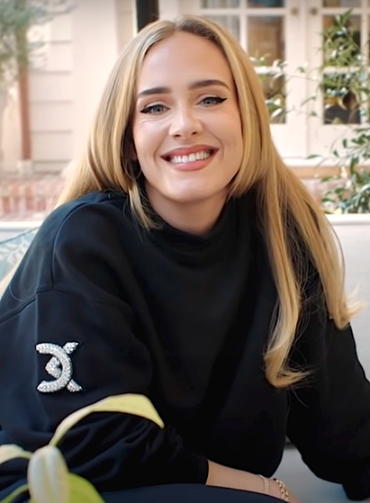

Аде́ль Ло́ри Блу Э́дкинс — британская певица, автор-исполнитель и поэтесса, лауреат 15 премий Грэмми и первый музыкант, сумевший выиграть в номинациях «Альбом года» , «Запись года» и «Песня года» дважды. Песня «Skyfall» в её исполнении получила премии «Оскар» и «Золотой глобус».
Окончив в 2006 году BRIT School, Адель заключила контракт с лейблом XL Recordings. В 2007 году победила в номинации «Выбор критиков» на премии Brit и была признана новым лучшим исполнителем на BBC Sound of 2008 по итогам опроса. Её дебютный альбом 19 был выпущен в 2008 году и стал коммерчески успешным. На 51-ой церемонии «Грэмми» в 2009 году она получила награды в номинациях «Лучший новый исполнитель» и «Лучшее женское вокальное поп-исполнение».
Список песен Адели
- «Can’t Let Go»
- «Best for Last»
- «Can’t Let Go»
- «Crazy for You»
- «Daydreamer»
- «First Love»
Биография
Родилась 5 мая 1988 года в Лондоне, в районе под названием Тоттенем. Её мать — англичанка Пенни Эдкинс, отец —
Марк Эванс. Эванс ушёл из семьи, когда Адель было два года. В возрасте четырёх лет девочка начала петь, и пение
стало её любимым занятием. В 1997 году Адель вместе с матерью переехала на южное побережье Англии, в Брайтон. В
1999 году они вернулись в Лондон; сначала в Брикстон, а затем в соседний район — Западный Норвуд.
Адель впервые выступила на сцене в школе, где исполнила «Rise» (хит Габриэль). К этому времени она находилась
под влиянием своих любимых исполнительниц Этты Джеймс и Дасти Спрингфилд, хотя, по собственному признанию, на их
пластинки натолкнулась случайно. Позже она поступила в Лондонскую школу исполнительского искусства и технологий
в Кройдоне (где обучались также Эми Уайнхаус, Кэти Мелуа, Леона Льюис и Кейт Нэш) и окончила её в мае 2006 года.
Спустя два месяца она опубликовала в четвёртом издании онлайнового арт-журнала PlatformsMagazine.com две свои
композиции.
В октябре 2007 года Адель отправилась в своё первое британское турне. К этому времени на MySpace появилась её
демоплёнка, записанная ещё в юности и позже подаренная приятелю, который там её и разместил. Именно благодаря
успеху на MySpace Адель получила свой первый контракт. 22 октября 2007 года на лейбле Pacemaker Recordings
(принадлежащем Джейми Ти) вышел её дебютный сингл «Hometown Glory», своего рода трибьют Тоттенему, который на
iTunes был признан «Синглом недели», а в апреле 2008 года сингл снова попал в британский топ-40, после того как
был использован в саундтреке сериала «Skins».
Автограф
Студийные альбомы
- Everything Is New
- Consolers of the Lonely
- Matinéeru
- Skyfall
Личная жизнь
В 2011 году Адель начала встречаться с бизнесменом Саймоном Конекки . 19 октября 2012 года у пары родился сын — Анджело Джеймс Конекки. По заявлению певицы на одном из концертов в Австралии, в марте 2017, пара тайно поженилась на закрытой церемонии в своём особняке в Лос-Анджелесе. В марте 2017 года они купили дом в East Grinstead в графстве Западный Суссекс на юге Англии. 19 апреля 2019 года Адель объявила об их расставании. При этом в заявлении отмечается, что бывшие супруги обязуются вместе и в любви растить своего сына и просят сохранить их право на неприкосновенность частной жизни, а также оговаривается, что дальнейших комментариев не последует. 12 сентября 2019 года Адель подала на развод.